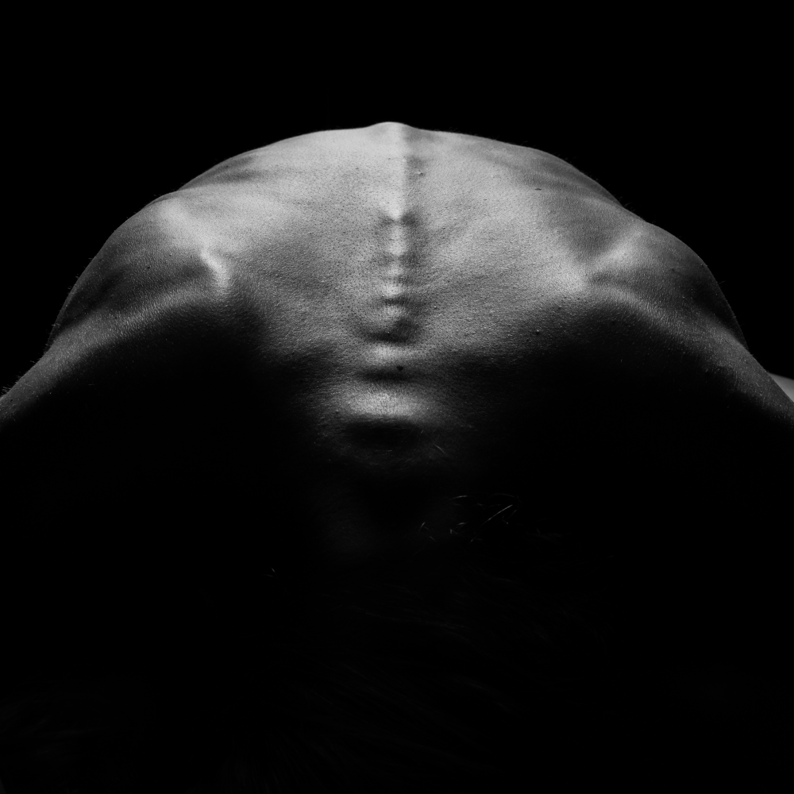

Athos K Florides
 Athos’s career began in 1998 when he went for studies in the US. His early photographic work was based on film until 2012, and it relates mostly to street and documentary photography. He turned Professional in 2017 when he opened his own studio and Photography business.The operations of the business included a small gallery, Photography related bookshop, sales of films, equipment imports and sales, film development and scanning and most importantly Photography classes and workshops. One of the main ideas when opening the studio, was to bring kids close to Photography and that was achieved by offering classes to children of ages 6 to 12. For the next couple of years the studio was an established Photography education center for both kids and adults. Pandemic though made things difficult and due to the lockdowns classes have been postponed.
2017 was the year that changed or “forced” him to adopt a new style in photography. During that year he experienced both life (birth of his daughter) and death (sudden death of his father) within 2 months period. Both events had a significant impact on the work that followed. His work now is more focused on black and white images using the technique of one strobe light, creating a more dramatic result. He applies this both on his portraits and fine art nudes. He likes working with limited source of light and using a lot of negative space. His personal work is based mostly on self assigned projects like, documenting behind-the-scenes the life of racing horses and the people that are taking care of them. Another ongoing project that was interrupted by COVID was the scars project. Recording photographically and verbally the scars that people carry on their bodies and the stories behind them.
One of his strongest work was the photographic documentation of his father last days. It’s a mixed work of mobile phone photos taken the three days that his father was hospitalized, as well as studio photos of his father’s belongings. After a long break (almost a year) and some ups and downs, he now prepares a new conceptual project that is dedicated to people who suffer a type of mental illness. His aim is to set awareness to the society, and especially societies with taboos, that people with mental illness are not “crazy” nor they have a special need. They only thing they ask is to understand them. If this is not possible at least respect them.